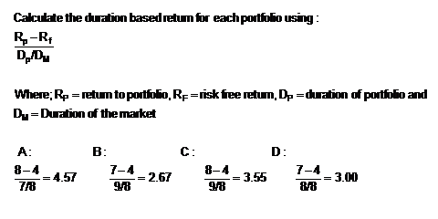
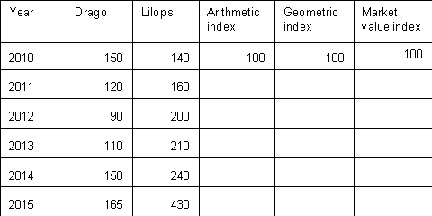
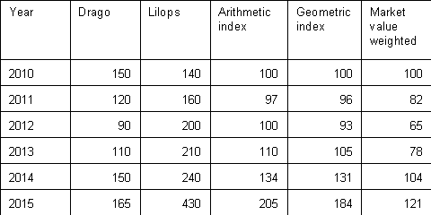
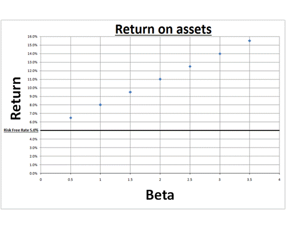
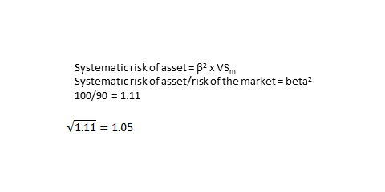
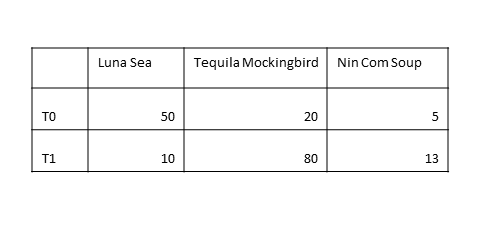
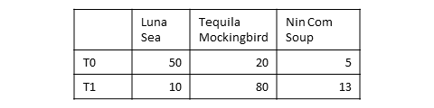
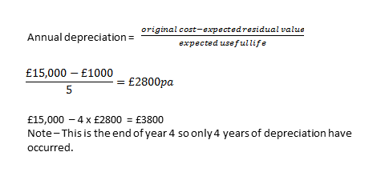
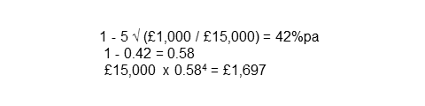
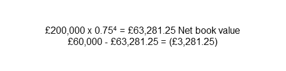

Practice Mock Exam
Question 1
[1001107]
Which of the following is NOT true of preference shares?
A
In case of liquidation, holders of preference shares have priority in terms of the payment of nominal value over ordinary shareholders
B
In case of liquidation, holders of preference shares have priority in terms of the payment of dividend arrears over ordinary shareholders
C
Preference shares usually pay dividends fixed as a percentage of the nominal value
D
If cumulative, dividend arrears must be paid before an ordinary dividend can be paid
The correct answer is: B - In case of liquidation, holders of preference shares have priority in terms of the payment of dividend arrears over ordinary shareholders
Explanation
In liquidation, preference shareholders have priority over ordinary shareholders in the repayment of the nominal value. Unless the articles specify otherwise, preference dividends will not usually be paid in liquidation.Question 2
[1001110]
An investor receives a dividend of £2.60 per share on a holding of 350 shares. For what amount is the tax credit?
You should answer this question by typing in the following format without symbols: 000.00.
The correct answer is: 101.11 - 101.11
Explanation
First calculate the gross dividend: (£2.6/90) x 100 = £2.88889 Subtract the net dividend from the gross dividend to get the tax credit: £2.88889 - £2.60 = £0.28889 tax credit per share. Therefore total tax credit = 350 shares x £0.28889 = £101.11Question 3
[1001245]
Which of the following is NOT true of equity warrants?
A
They are only issued by companies
B
When exercised they generate new cash for the company
C
They may pay a fixed or variable income
D
They are traded on the LSE
The correct answer is: C - They may pay a fixed or variable income
Explanation
Warrants may be issued attached to loan stock, acting as a sweetener to investors buying the bonds. The warrants may either be detachable from the bond, in which case they may be traded separately from the bond itself, or non-detachable, which means that the investors buy and sell the bond and warrant as a 'package'.Question 4
[1001401]
A company has turnover of £550,000, profit before tax of £50,000 and profit after tax of £30,000. If dividends are £10,000, what is the dividend cover?
A
5x
B
4.5x
C
3x
D
2.7x
The correct answer is: C - 3x
Explanation
Dividend cover = profit after tax / net dividend. = £30,000 / £10,000. = 3x.Question 5
[1005050]
A primary market is one in which:
A
Only market makers may apply for shares
B
Only blue chip securities are traded
C
A company raises capital
D
Normal market trading occurs between investors
The correct answer is: C - A company raises capital
Explanation
The primary market is where the company itself is issuing shares in order to generate finance. The answer in 'normal market trading occurs between investors' describes the secondary market. The secondary market consists of normal market trading between investors and does NOT generate capital for the company. 'A company raises capital' is the correct answer.Question 6
[1005229]
What is the main index of France?
A
DJIA
B
FTSE
C
XETRA DAX
D
CAC
The correct answer is: D - CAC
Explanation
The CAC 40 is the main index of France.Question 7
[1012664]
A fund manager holds a £5m portfolio of well diversified UK shares and wishes to hedge using the FTSE 100 index future @ 5030. Calculate the hedge ratio.
A
Sell 100 futures
B
Sell 1000 futures
C
Buy 100 futures
D
Buy 1000 futures
The correct answer is: A - Sell 100 futures
Explanation
The FTSE 100 index future is cash settled at £10 per point. 5m/ (5030 x £10) = 99.4. i.e. sell 100 futures.Question 8
[1012683]
Which of the following best describes the retail price index?
A
The change in inflation, measured on a monthly basis.
B
The change in an index based on particular goods set by the treasury.
C
The movement in the price of a particular good in relation to inflation.
D
The average price of a basket of goods and services purchased by an average household.
The correct answer is: D - The average price of a basket of goods and services purchased by an average household.
Explanation
The RPI is an index based on the average price of a basket of goods and services. It was rebased in 1987 to 100 and each month the index is revalued. The change in the index gives us the best known measure of inflation.Question 9
[1012686]
Which of the following futures contracts are physically delivered on LIFFE?
A
FTSE 100 index
B
STIR
C
US Dollar/Euro
D
6% Notional Gilt
The correct answer is: D - 6% Notional Gilt
Explanation
All of the others are contracts on LIFFE, but are contracts for difference (CFD), i.e. they are cash settled.Question 10
[1013089]
For a firm in perfect competition, when is profit maximising output?
A
MC = MR
B
MC = AC
C
AC = AR
D
MR = TR
The correct answer is: A - MC = MR
Explanation
Under perfect competition the demand schedule is flat, so marginal revenue equals average revenue (or price). With a flat demand curve, the firm can sell as much as it wishes, and the profit-maximising condition of MC = MR will give the desired output level.Question 11
[1013121]
The Edmonton Energy Company buys a CD via the secondary market from the Ilford Ink Company. The credit risk associated with this CD for the Edmonton Energy Company is:
A
The risk of the issuer defaulting
B
The risk of the Ilford Ink Company defaulting
C
The risk of an increase in interest rates
D
Re-investment risk at the maturity of the CD
The correct answer is: A - The risk of the issuer defaulting
Explanation
The issuers of CDs are banks. The credit risk lies with the issuing bank defaulting and not paying the holder of the CD the proceeds at maturity. Answers C and D are not credit risk; they are interest rate risk and re-investment risk respectively.Question 12
[1013126]
Which of the following are advantages of passive fund management?
A
I and II
B
I and III
C
II and III
D
I, II and III
The correct answer is: A - I and II
Explanation
Because passive management involves tracking an index or benchmark, rather than continually seeking out cheap shares, its management and transaction costs are kept low. A disadvantage of a passively managed fund is that if the benchmark index suffers a bear market, the fund will track the downturn too.Question 13
[1013129]
Given the following information regarding employees salaries:
Salary / £000's No. of employees
30 or less 15
31 to 40 25
41 to 50 35
51 to 60 15
61 and above 10
What is the cumulative percentage of employees with an annual salary less than or equal to £50,000?
You should answer this question by typing the correct numbers in the following format without any symbols: 00
The correct answer is: 75 - 75
Explanation
The total number of employees is 100. The total number of employees with a salary below £50,000 is 15 + 25 + 35 = 75. The cumulative percentage is therefore 75 / 100 = 0.75 or 75%.Question 14
[1013132]
What type of preference share does the following statement refer to?
"They are repayable normally at nominal value at a specified time or within a specified period"
A
Cumulative
B
Convertible
C
Participating
D
Redeemable
The correct answer is: D - Redeemable
Explanation
NB: Cumulative means that the holder never loses the rights to dividend, even if they are unpaid during the current year, convertible preference shares convert into ordinary shares and participating preference shares may receive bonuses on top of their fixed dividend, and in the event of the company being wound up are entitled to more than nominal value.Question 15
[1013137]
The fund manager of BigFund has a time horizon of five years. This means:
A
No withdrawals from the fund are allowed for five years
B
Investments are chosen to give optimal performance as measured in five years' time
C
Investments are chosen to give optimal performance within five years
D
No deposits or withdrawals from the fund are allowed after five years
The correct answer is: B - Investments are chosen to give optimal performance as measured in five years' time
Explanation
A time horizon of five years provides a sensible evaluation of investment objectives based on reasonably foreseeable changes in conditions and circumstances, though as financial and economic conditions become more volatile there may be a tendency to focus on shorter periods.Question 16
[1013140]
A company's share price is currently 480p. If its dividend cover, having paid a dividend of 12p, is 2: what is the company's price earnings ratio (P/E)?
A
15x
B
20x
C
25x
D
30x
The correct answer is: B - 20x
Explanation
Dividend cover = Earnings per share(EPS) / Net dividend 2 = EPS / 12p EPS = 2 x 12p EPS = 24p P/E = Share price / Earnings per share = 480p / 24p per share = 20 x.Question 17
[1013142]
If expenditure on UK imports exceeds revenue from exports, what is the effect on the trade figures?
A
A public sector net cash deficit
B
A public sector net cash surplus
C
A current account surplus
D
A current account deficit
The correct answer is: D - A current account deficit
Explanation
Imports vs. exports - current account, an excess of imports over exports leads to a current account deficit. Tax vs. public spending - public sector net cash requirement or public sector net debt repayment.Question 18
[1013143]
Which of the following best describes the immunisation strategy for bond portfolios?
A
Selecting bonds on the basis of cash payments to protect the portfolio from changes in interest rates
B
Selecting bonds on the basis of duration to protect the portfolio from changes in interest rates
C
Selecting bonds on the basis of duration to protect the portfolio from future income tax liabilities
D
Selecting bonds on the basis of duration to protect the portfolio from changes in currency movements
The correct answer is: B - Selecting bonds on the basis of duration to protect the portfolio from changes in interest rates
Explanation
By selecting bonds according to their duration the portfolio is protected against changes in interest rates. Bonds may be immunised on a bullet basis (all the durations in the portfolio are close to the durations of the liabilities) or on a barbell basis (the durations are above and below those of the fund's liabilities, but are weighted to give the same average duration).Question 19
[1013146]
The risk free rate of return is 4% and the CAPM beta of stock A is 1.8. If the CAPM benchmark return is 11.2% what is the return to the market?
A
4%
B
8%
C
10%
D
12%
The correct answer is: B - 8%
Explanation
Using the CAPM formula: 11.2% = 4% + 1.8 ( Rm - 4%) Solve for Rm = 8%.Question 20
[1013148]
Which of the following is true regarding the manager of a tracker fund's objectives?
A
They search for over or under-priced securities with which to build the portfolio
B
Their target is to out-perform a benchmark index of securities similar to those contained in the portfolio
C
They regularly use techniques such as price-earnings forecasting and identifying potential takeover targets
D
They look to achieve a portfolio of securities with an alpha close to zero
The correct answer is: D - They look to achieve a portfolio of securities with an alpha close to zero
Explanation
Tracker funds are an example of passive fund management. The portfolio's alpha is a measure of the extra return it has achieved above a pre-determined benchmark. Passive fund management is about meeting the return of a benchmark rather than beating it.Question 21
[1013149]
The duration of a bond market is eight years. If the risk free rate is 4%, which of the following bond portfolios has achieved the best duration based performance?
A
Average duration of 7yrs and return of 8%
B
Average duration of 9yrs and return of 7%
C
Average duration of 9yrs and return of 8%
D
Average duration of 8yrs and return of 7%
The correct answer is: A - Average duration of 7yrs and return of 8%
Explanation
For bonds relative duration (duration of portfolio / duration of the market) may be used in the Treynor measure of performance instead of beta:
Question 22
[1013150]
A retail company values its stock according to the FIFO cost flow assumption. During 20X1 it has purchased the following amounts of stock at the following prices:
March 6,000 items at £2.00 each
June 2,000 items at £2.20 each
September 5,000 items at £2.30 each
If the company sells 7,000 units what is the value of the closing stock?
A
£13,700
B
£12,900
C
£12,200
D
£12,000
The correct answer is: A - £13,700
Explanation
Using the first in first out (FIFO) assumption the 7,000 items sold that year would comprise of all of those purchased in March and 1,000 of those purchased in June. This would leave 1,000 items at a cost of £2.20 and all of the 5,000 purchased in September at £2.30. Their total value would be (£2.20 x 1,000) + (£2.30 x 5,000) = £13,700.Question 23
[1013152]
An investment is purchased for $10,000 when sterling is valued at $1.60. If, after one year, the investment has appreciated by 5%, and the US dollar has depreciated by 7% what is the net gain or loss, in sterling terms, on the investment?
A
£134.41 gain
B
£806.45 gain
C
£116.82 loss
D
£700.93 loss
The correct answer is: C - £116.82 loss
Explanation
When the investment is purchased its sterling value is: $10,000 / 1.60 = £6,250 At the end of the year the investment has grown by 5% and the dollar has fallen in value by 7%: $10,000 x 0.05 = $10,500 and 1.60 x 0.07 = 0.112 which gives a weaker dollar value of $1.7120. The value, in sterling terms is therefore $10,500 / 1.7120 = £6,133.18 a loss of £116.82.Question 24
[1013153]
A three year bond which has a nominal value of £5,000 and pays a coupon of £400. If its internal rate of return is 8%, what is its market value?
A
£4,000
B
£4,800
C
£5,000
D
£10,000
The correct answer is: C - £5,000
Explanation
The coupon is 8% of the nominal value (£400 / £5,000 = 0.08). Its internal rate of return (a.k.a gross redemption yield or yield to maturity) is also 8% which means the bond must be trading at par.Question 25
[1013154]
Which of the following terms is used to describe the risks associated specifically with an asset and which is not present in other assets?
A
Systematic risk
B
Market risk
C
Unsystematic risk
D
Total risk
The correct answer is: C - Unsystematic risk
Explanation
The total risk to an asset is made up of market risk (a.k.a systematic risk) plus specific risk (a.k.a unique risk, idiosyncratic risk or unsystematic risk).Question 26
[1013156]
The median is the measure of central tendency best described as:
A
The most frequently occurring number in a data set which is not necessarily in any order
B
The most frequently occurring number in a data set which is ranked in size order
C
The arithmetic mean of the two middle values when data is ordered by size and there is an even number of observations
D
The result of adding together the values of all observations and dividing by the total number of observations
The correct answer is: C - The arithmetic mean of the two middle values when data is ordered by size and there is an even number of observations
Explanation
The median for an odd number of observations is simply the middle item - the arithmetic mean is only taken if there is an even number of observations.Question 27
[1013160]
A one year bond yields 8%. The expected yield of a one year bond in one year is 10%. What is the implied two year yield?
A
8%
B
9%
C
10%
D
Cannot calculate
The correct answer is: B - 9%
Explanation
An average of the two, one year rates gives an approximation of the two year yield.Question 28
[1013165]
Which of the following does 'cash matching' in portfolio management involve?
A
I and III
B
II only
C
I and II
D
I, II and III
The correct answer is: B - II only
Explanation
Cash matching is the creation of a dedicated portfolio, thereby removing interest rate or reinvestment risk.Question 29
[1013172]
The September three month interest rate future is trading at 96.45. What does this imply the interest rate is for a three month deposit starting September?
A
9.645%
B
3.55%
C
96.45%
D
5.425%
The correct answer is: B - 3.55%
Explanation
The price of the interest rate future contract traded on NYSE Liffe is 100 minus the implied interest rate (100 - 96.45).Question 30
[1013224]
£10,000 is placed into a deposit account which pays 5% pa, and at the end of each year the investor withdraws £2,000. What would be the balance in the account at the end of three years?
A
£5,000.00
B
£5,271.25
C
£5,576.25
D
£6,528.34
The correct answer is: B - £5,271.25
Explanation
There are two ways to answer this question. The first way is to do it long-hand; work out the capital plus interest at the end of the first year, subtract the £2,000 then work out the capital plus interest for the second year on what's left and so on. The alternative is to look at the £2,000 payments as an annuity, calculate the annuity's present value and subtract this from the initial £10,000 deposit. Then work out how much the remainder (£10,000 - value of annuity) is worth when compounded over three years at 5%:
Question 31
[1013394]
If the GBP/EUR 12 month forward rate is 2.241 - 2.245, and the 12 month forward premium is 0.047 - 0.045, what is the GBP/EUR spot rate?
A
2.288 - 2.290
B
2.194 - 2.200
C
2.286 - 2.292
D
2.196 - 2.198
The correct answer is: A - 2.288 - 2.290
Explanation
Remember that a premium has been subtracted from the spot to arrive at the forward rate. It needs to be added on to the forward to give us the spot: 2.2410 + 0.0470 = 2.2880 and 2.2450 + 0.0450 = 2.2900Question 32
[1017599]
Capital Property plc purchased No. 1 Park Lane for £2m, and incurred buying costs of £50,000. Assuming they let out the property at £300,000 per year and have expenses of £60,000, what is the rental yield?
You should answer this question by typing the correct numbers in the following format without any symbols: 00.0
The correct answer is: 11.7 - 11.7
Explanation
Rental yield = gross rent - expenses / property cost + buying costs. Rental yield = £300k - £60k / £2m + £50k. Rental yield = £240k / £2,050,000 = 11.7%.Question 33
[1020482]
Who is the legal owner of the assets in a trust?
A
Settlor
B
Beneficiary
C
Trustee
D
Remainderman
The correct answer is: C - Trustee
Explanation
The trustee is the legal owner of the assets. The beneficiaries are the beneficial owners.Question 34
[1020484]
How are shares in an open-ended investment company MOST LIKELY to be priced?
A
Single-pricing based on supply and demand for the shares
B
Bid/Offer spread incorporating the fees and administration costs of the fund
C
Single-pricing based on the value of the underlying shares
D
Single-pricing based on the market value of the shares which are then discounted
The correct answer is: C - Single-pricing based on the value of the underlying shares
Explanation
'Single-pricing based on the value of the underlying shares' is the best answer. OEICs are usually based on single-pricing. Same price for buying and selling a share. Unit trusts can be priced either one-way (as OEICs) or two-way with a bid-offer spread quote.Question 35
[1020485]
Which one of the following provides the best description of the role of the depository in an open-ended investment company?
A
The organisation that sits between the client and the authorised corporate director and suggests which shares to buy
B
The organisation responsible for holding the investments and ensuring the fund is managed in line with the prospectus
C
The organisation responsible for maintaining the register of the shareholders
D
The organisation responsible for the day-to-day running of the fund
The correct answer is: B - The organisation responsible for holding the investments and ensuring the fund is managed in line with the prospectus
Explanation
'The organisation responsible for holding the investments and ensuring the fund is managed in line with the prospectus' is the best description of the role of the depository. The authorised corporate director is responsible for maintaining the register of the shareholders and the day-to-day running of the fund.Question 36
[1023973]
What happens to a bond if its credit-rating changes from sub-investment grade to investment grade?
A
Price increases, coupon increases
B
Price increases, coupon stays the same
C
Price decreases, coupon increases
D
Price decreases, coupon stays the same
The correct answer is: B - Price increases, coupon stays the same
Explanation
The price of the bond will increase (because we will be discounting at a lower rate). The coupon will stay the same but the yield (return on the bond) will fall. This is to reflect the lower risk due to the increase in the credit rating.Question 37
[1024206]
Commercial paper is which of the following?
A
Secured, short-term debt repaid at par
B
Unsecured, short-term debt repaid at par
C
Secured, long-term debt repaid at a premium to par
D
Unsecured, short-term debt repaid at a premium to par
The correct answer is: B - Unsecured, short-term debt repaid at par
Explanation
Commercial paper is unsecured, short-term debt, issued at a discount and therefore repaid at par.Question 38
[1032473]
A wealthy finance professional wishes to establish a $2,000,000 trust fund, which will provide income for his grandson into perpetuity. He stipulated in the trust agreement that the principal may not be distributed. The grandson may only receive the interest earned.
If the interest rate earned on the trust is expected to be at least 7% in all future periods, which of the following is closest to the income the grandson and his heirs will receive each year?
A
$89,000
B
$200,000
C
$140,000
D
$100,000
The correct answer is: C - $140,000
Explanation
2,000,000 * 0.07 = $140,000 per year.Question 39
[1038837]
A portfolio with a value of US $23.5m has a Beta relative to the S&P 500 of 1.13. How many S&P 500 contracts, quoted at 850 points, are required to fully hedge this position?
The CME S&P 500 contract is valued at US $250 multiplied by the index points.
A
98 contracts
B
111 contracts
C
125 contracts
D
212 contracts
The correct answer is: C - 125 contracts
Explanation
The basic hedge would be calculated as follows: 23.5m / (850 x 250) = 110.59 However, our portfolio has a Beta of 1.13, which is more sensitive that the S&P 500 (13% more sensitive). This means we need to take the basic hedge and multiply it by Beta: 110.59 x 1.13 = 124.97, rounded to 125 contracts.Question 40
[1041468]
Six firms have earnings growth predicted by a financial analyst as follows:
Firm Earnings growth
A 1%
B 30%
C -20%
D -5%
E 19%
F 10%
What is the geometric mean of their predicted earnings growth?
You should answer this question using the following format 0.0
The correct answer is: 4.55% - 4.55%
Explanation
First, multiply the estimates together: 1.01 x 1.3 x 0.8 x 0.95 x 1.19 x 1.1 = 1.3062 Take the 6th root of this number: = 1.0455 Subtract the 1: = 0.0455 or 4.55 pct.Question 41
[1041470]
The percentage price change of nine shares over the last two years is as follows:
20% 91% -10% 14% 28% 32% 45% 12% 85%
What is the median price change?
A
35.2%
B
28.0%
C
25.0%
D
22.0%
The correct answer is: B - 28.0%
Explanation
The median is the central value of a stream of data. The first thing to do is to place all the returns in numerical order: -10% 12% 14% 20% 28% 32% 45% 85% 91% Then take the central value, in this case 28%.Question 42
[1043287]
A company paid a dividend of 20p per share last year, its dividend cover was 8 and the net dividend yield was 6%. What was the P/E ratio of the company?
A
3.33
B
2.1
C
1.6
D
0.2
The correct answer is: B - 2.1
Explanation
When asked to calculate P/E ratio, we generally expect to be given the price and the EPS. We are given neither. However, we are given enough information to work them out. We can get the price from the dividend yield calculation. Dividend yield = dividend / price 0.06 = 20p / price Price = 20p / 0.06 = 333p We can get the EPS from the dividend cover calculation. Dividend cover = EPS / Dividend 8 = EPS / 20p EPS = 8 x 20p = 160p Now we have both the price and the EPS, so: P/E ratio = 333 / 160 = 2.1.Question 43
[1046693]
A football club is planning some new developments. Which of the following would be debited from revenue expenditure?
A
Increase in player's wages
B
Construction of new flood lighting
C
Extension to the existing changing rooms
D
Installation of a new corporate hospitality box
The correct answer is: A - Increase in player's wages
Explanation
Anything that relates to the day-to-day running of the business, e.g. wages and salaries are revenue expenditure.Question 44
[1047481]
A company makes an operating loss of £13m. Their inventory decreased by £2m and their trade receivables and payables increased by £1m each.
Based on this information alone, what is the net cash flow?
A
Minus £9m
B
Minus £11m
C
Minus £13m
D
Minus £15m
The correct answer is: B - Minus £11m
Explanation
The reduction in inventory frees up cash, so this can be added back to the minus £13m giving minus £11m. The trade receivables and payables cancel each other out Operating loss - £13m + Reduction in inventory + £2m - Increase in trade rec. +£1m + Increase in trade payables - £1m Net cash flow = -£11mQuestion 45
[1048116]
The weak form of efficient markets hypothesis (EMH) suggests that there is no place for which of the following in the markets?
A
Technical analysis of historic prices
B
Fundamental analysis of a company's activities
C
Official disclosure of inside information
D
Clandestine disclosure of inside information
The correct answer is: A - Technical analysis of historic prices
Explanation
The weak for of EMH suggests that the markets price already reflects all historic price information so there is no need to analyse this. However, it suggests other information is not necessarily known.Question 46
[1048165]
Frank draws a line of best fit through a scattergram for the 35 people that work in his office, showing the relationship between the distance each person lives from the office, and the average time taken for each person to commute to work. Iqbal lives closest to the office, at a distance of 2km, and Sheila lives furthest away from the office, at a distance of 29km. If Frank attempts to use this scattergraph to predict the journey time for Ethel, a new starter that lives 35km from the office, this is an example of:
A
Interpolation
B
Intrapolation
C
Extrapolation
D
Optapolation
The correct answer is: C - Extrapolation
Explanation
This is an example of extrapolation, since Ethel lives outside of the range of distances of the original scattergraph that Frank constructed (i.e. the 2km to 29km range). 'Intrapolation' and 'optapolation' are not examples of statistical techniques.Question 47
[1048167]
Which of the following statements are true regarding provisions allowing early redemption of a bond?
A
A call provision would allow the holder of the bond to pay the bond's obligations off early
B
A put provision gives the holder of the bond flexibility in avoiding default on the bond
C
A call provision gives the holder of the bond flexibility in avoiding default on the bond
D
A put provision would allow the holder of the bond to pay the bond's obligations off early
The correct answer is: B - A put provision gives the holder of the bond flexibility in avoiding default on the bond
Explanation
Call provisions allow the issuer of the bond to pay the bond's obligations off early, therefore giving flexibility to the issuer of the bond. A put provision would allow the holder of the bond to require the issuer of the bond to pay the bond's obligations off early, thus giving the holder flexibility in avoiding default on the bond.Question 48
[1048170]
Which of the following is NOT a characteristic of exchange-traded funds (ETFs)?
A
ETFs are open-ended
B
ETFs are traded on the secondary markets
C
ETFs are not subject to stamp duty
D
ETFs cannot be shorted
The correct answer is: D - ETFs cannot be shorted
Explanation
ETFs are becoming increasingly popular due to the fact that they can be shorted and they are not subject to stamp duty. They are open-ended, and are traded on the secondary markets.Question 49
[1049335]
The governor of the Bank of England issues a statement stating that the MPC is concerned: 'the balance of risks for inflation in the next 12 months is upwards from current levels'.
This comes as a surprise to participants in the gilt market. What would be the effect on gilt yields and gilt prices?
A
Gilt yields down; gilt prices down
B
Gilt yields up; gilt prices up
C
Gilt yields down; gilt prices up
D
Gilt yields up; gilt prices down
The correct answer is: D - Gilt yields up; gilt prices down
Explanation
There is an inverse relationship between gilt prices and their yields. As the yield or required rate of return of an investor increases, the price of the gilt decreases. In this scenario, a surprise increase in inflation will lead to a higher nominal yield (i.e. nominal return) required by investors for gilts, and therefore gilt prices will fall.Question 50
[1049934]
Consider the following economic indicators:
Indicator 1: stock market returns increase.
Indicator 2: gross domestic product increases.
Indicator 3: unemployment figures increase.
Indicator 4: applications for building permits increase.
Which of the following is true?
A
Indicators 1 and 3 can be used to predict that the economy is on the way to recovery
B
Indicators 2 and 4 would be a result of an economy already in recovery
C
Indicators 1 and 4 are leading indicators of economic recovery
D
Indicators 2 and 3 are coincident indicators of economic recovery
The correct answer is: C - Indicators 1 and 4 are leading indicators of economic recovery
Explanation
Leading indicators include: stock market returns, consumer expectation, building permits and money supply. These are used to predict where the economy is heading. Coincident indicators include: gross domestic product, industrial production, and retail sales. These are used to identify where an economy is in the economic cycle. Lagging indicators include the unemployment rate. These can be used to identify trends in the economy.Question 51
[1051082]
An investor sells 5,000 shares at a quoted spread of 200/211. The broker charges a fixed fee of £12.50 per trade. Soon after the sale the shares pay out a dividend of 5p. If the shares had been purchased for 1.90 each, what is the profit made by the investor if the shares were sold ex-dividend?
A
£487.50
B
£500
C
£737.50
D
£750
The correct answer is: C - £737.50
Explanation
The shares were sold ex-dividend, so the investor (the seller) receives the dividend. This means his total return per share is: Proceeds + dividend - cost of shares = 200 + 5 - 190 = 15p per share There were 5,000 shares giving a total return of 15p x 5000 shares = £750.00. However, the broker charged £12.50 for the sale so £737.50 would be the answer. Note: in reality we should have taken into consideration the fees on the purchase (assume another £12.50) and the stamp duty of 0.5% on the purchase (£47.50). This would give an answer of £677.50. However, this was not available in the exam. For this reason, we recommend that delegates use the information given in the question quite strictly when sitting the exam.Question 52
[1051084]
A fund manager chooses to use a market-weighted benchmark rather than an equal-weighted benchmark. Which of the following is a feature of the chosen benchmark?
A
Each company is considered to have an equal investment
B
The Nikkei is an example of this type of index
C
Large companies will have more influence on index movements
D
These types of index only exist in the UK
The correct answer is: C - Large companies will have more influence on index movements
Explanation
A market-weighted index considers the market capitalisation of the company. This means that the bigger the company, the bigger the influence on the index. Nikkei 225 uses an equal-weighted index.Question 53
[1051533]
Which of the following describes the correlation of the returns from the US and UK equity markets?
A
The correlation is slightly positive and has been so for many years
B
The correlation is positive but has been reducing in strength since the 1970s
C
The correlation is positive and has been increasing in strength since the 1970s
D
The correlation is negative but has become increasing uncorrelated for many years
The correct answer is: C - The correlation is positive and has been increasing in strength since the 1970s
Explanation
Due to the interconnectedness of the markets and their participants, and the increasing influence of multi-national companies, the correlation of the returns from the US and UK equity markets has become increasingly positive since the seventies. During the last decade there was a very strong positive correlation (approx. +0.9).Question 54
[1054100]
Dan has decided to speculate on the copper market. He has monitored the commodity price and has identified what he believes to be a long-term trend using historical analysis. Whilst he has considered an investment in the underlying asset, he feels that the information he has gathered indicates that purchasing a combination of derivatives would be more profitable.
On the market that Dan trades, the option runs for a period of one month and gives the option to purchase a future contract at strike price on expiry. These future contracts are for 25,000 pounds of copper. Currently the copper future is trading at $1.4500 per pound.
Dan buys a put option at a premium of 0.1000 per pound and a call option at a premium of 0.0500 per pound. The put option has a strike of $1.3000 per pound and the call option has a strike of $1.5000 per pound. Mid month, Dan is concerned that he will make a loss on the trade. In order to try and rectify the situation, he decides to close out his position.
At expiry the copper future is trading 15% higher than it was when the option was bought.
The put writer's maximum loss on the entire contract would be:
A
$30,000
B
$25,000
C
$1.3000
D
$32,500
The correct answer is: A - $30,000
Explanation
The worst case scenario for the writer is that the price of the copper future drops to $0/lb and Dan can then sell it to them at 1.3000 / lb. Even in this scenario they will still retain the premium; therefore the max loss is: Strike - premium = $1.3000 / lb - $0.1000 / lb = 1.2000 / lb As this contract is for 25,000 lbs, you need to multiply to find the full contract loss. $1.2000 / lb x 25,000 lb = $30,000Question 55
[1054101]
Dan has decided to speculate on the copper market. He has monitored the commodity price and has identified what he believes to be a long-term trend using historical analysis. Whilst he has considered an investment in the underlying asset, he feels that the information he has gathered indicates that purchasing a combination of derivatives would be more profitable.
On the market that Dan trades, the option runs for a period of one month and gives the option to purchase a future contract at strike price on expiry. These future contracts are for 25,000 pounds of copper. Currently the copper future is trading at $1.4500 per pound.
Dan buys a put option at a premium of 0.1000 per pound and a call option at a premium of 0.0500 per pound. The put option has a strike of $1.3000 per pound and the call option has a strike of $1.5000 per pound. Mid month, Dan is concerned that he will make a loss on the trade. In order to try and rectify the situation, he decides to close out his position.
At expiry the copper future is trading 15% higher than it was when the option was bought.
The intrinsic value of the call option at inception would be:
A
-$0.0500
B
$0.0500
C
$0.0000
D
$0.0150
The correct answer is: C - $0.0000
Explanation
The intrinsic value of a call option can be calculated as: Underlying - strike = 1.4500 - 1.5000 = -0.0500 The holder of call option has a choice so they would not buy at a price that would lose them money. Therefore, the minimum intrinsic value is 0.Question 56
[1054102]
Dan has decided to speculate on the copper market. He has monitored the commodity price and has identified what he believes to be a long-term trend using historical analysis. Whilst he has considered an investment in the underlying asset, he feels that the information he has gathered indicates that purchasing a combination of derivatives would be more profitable.
On the market that Dan trades, the option runs for a period of one month and gives the option to purchase a future contract at strike price on expiry. These future contracts are for 25,000 pounds of copper. Currently the copper future is trading at $1.4500 per pound.
Dan buys a put option at a premium of 0.1000 per pound and a call option at a premium of 0.0500 per pound. The put option has a strike of $1.3000 per pound and the call option has a strike of $1.5000 per pound. Mid month, Dan is concerned that he will make a loss on the trade. In order to try and rectify the situation, he decides to close out his position.
At expiry the copper future is trading 15% higher than it was when the option was bought.
What is the name for the style of option taken out?
A
American
B
European
C
Bermudan
D
Mexican
The correct answer is: B - European
Explanation
A European style option can only be exercised at expiry.Question 57
[1054103]
Dan has decided to speculate on the copper market. He has monitored the commodity price and has identified what he believes to be a long-term trend using historical analysis. Whilst he has considered an investment in the underlying asset, he feels that the information he has gathered indicates that purchasing a combination of derivatives would be more profitable.
On the market that Dan trades, the option runs for a period of one month and gives the option to purchase a future contract at strike price on expiry. These future contracts are for 25,000 pounds of copper. Currently the copper future is trading at $1.4500 per pound.
Dan buys a put option at a premium of 0.1000 per pound and a call option at a premium of 0.0500 per pound. The put option has a strike of $1.3000 per pound and the call option has a strike of $1.5000 per pound. Mid month, Dan is concerned that he will make a loss on the trade. In order to try and rectify the situation, he decides to close out his position.
At expiry the copper future is trading 15% higher than it was when the option was bought.
What type of strategy has Dan created?
A
Short straddle
B
Short strangle
C
Long straddle
D
Long strangle
The correct answer is: D - Long strangle
Explanation
The purchase of a call and a put at different strike prices is a long strangle.Question 58
[1054104]
Dan has decided to speculate on the copper market. He has monitored the commodity price and has identified what he believes to be a long-term trend using historical analysis. Whilst he has considered an investment in the underlying asset, he feels that the information he has gathered indicates that purchasing a combination of derivatives would be more profitable.
On the market that Dan trades, the option runs for a period of one month and gives the option to purchase a future contract at strike price on expiry. These future contracts are for 25,000 pounds of copper. Currently the copper future is trading at $1.4500 per pound.
Dan buys a put option at a premium of 0.1000 per pound and a call option at a premium of 0.0500 per pound. The put option has a strike of $1.3000 per pound and the call option has a strike of $1.5000 per pound. Mid month, Dan is concerned that he will make a loss on the trade. In order to try and rectify the situation, he decides to close out his position.
At expiry the copper future is trading 15% higher than it was when the option was bought.
With this strategy Dan is hoping that the market:
A
Rises
B
Falls
C
Rises or falls
D
Does not rise or fall
The correct answer is: C - Rises or falls
Explanation
With a long straddle or strangle, the price of the underlying must move enough that it offsets the premium that was paid for the purchase. This means that the holder is hoping for volatility so that the price either rises or falls sufficiently.Question 59
[1054105]
Dan has decided to speculate on the copper market. He has monitored the commodity price and has identified what he believes to be a long-term trend using historical analysis. Whilst he has considered an investment in the underlying asset, he feels that the information he has gathered indicates that purchasing a combination of derivatives would be more profitable.
On the market that Dan trades, the option runs for a period of one month and gives the option to purchase a future contract at strike price on expiry. These future contracts are for 25,000 pounds of copper. Currently the copper future is trading at $1.4500 per pound.
Dan buys a put option at a premium of 0.1000 per pound and a call option at a premium of 0.0500 per pound. The put option has a strike of $1.3000 per pound and the call option has a strike of $1.5000 per pound. Mid month, Dan is concerned that he will make a loss on the trade. In order to try and rectify the situation, he decides to close out his position.
At expiry the copper future is trading 15% higher than it was when the option was bought.
If Dan had held the options until expiry, his gain/loss would have been:
A
$437.50
B
$450.37
C
$4,180.00
D
$3,700.00
The correct answer is: A - $437.50
Explanation
The price of the future increased by 15% from $1.4500 / lb 1.4500 x 1.15 = $1.6675 This is above the call option strike price, meaning it would be in-the-money and therefore exercised. The value of the call option can be calculated as: Underlying - strike = $1.6675 / lb - $1.5000 / lb = $0.1675 / lb As this contract is for 25,000 lbs, you need to multiply to find the full contract profit.. $0.1675 / lb x 25,000 = $4187.50 The premiums paid and therefore the maximum losses were: Put $0.1000 / lb x 25,000 = $2,500 Call $0.0500 / lb x 25,000 = $1,250 = $3,750 To find the net profit, subtract the losses from the gains $4187.50 - $3750 = $437.50Question 60
[1054680]
An investment manager has 8,000 shares in Drago industries and 500 shares in Lilops cosmetics. Recently (2015), Lilops stock has undergone a 1:1 consolidation. When the manager set up the portfolio in 2010, she wanted to easily be able to monitor changes in the shares over time. To enable her to do this, she created an arithmetic, geometric and market value index to help her keep track of the portfolio growth. She then recorded the price movement over the next five years and adjusted the indices as necessary.
What is the percentage change between 2011 and 2014 for Drago's stock?

A
3%
B
37.5%
C
25%
D
0%
The correct answer is: C - 25%
Explanation
Percentage change = end value / start value - 1 x 100 (150 / 120) - 1) x 100 = 25%Question 61
[1054681]
An investment manager has 8,000 shares in Drago industries and 500 shares in Lilops cosmetics. Recently (2015), Lilops stock has undergone a 1:1 consolidation. When the manager set up the portfolio in 2010, she wanted to easily be able to monitor changes in the shares over time. To enable her to do this, she created an arithmetic, geometric and market value index to help her keep track of the portfolio growth. She then recorded the price movement over the next five years and adjusted the indices as necessary.
What is the portfolio arithmetic index value for 2013?
A
104
B
110
C
93
D
210
The correct answer is: B - 110
Explanation
Index value = current price x 100 / base price (110 + 210) x 100 / (150 + 140) = 110.34Question 62
[1054682]
An investment manager has 8,000 shares in Drago industries and 500 shares in Lilops cosmetics. Recently (2015), Lilops stock has undergone a 1:1 consolidation. When the manager set up the portfolio in 2010, she wanted to easily be able to monitor changes in the shares over time. To enable her to do this, she created an arithmetic, geometric and market value index to help her keep track of the portfolio growth. She then recorded the price movement over the next five years and adjusted the indices as necessary.
What is the price relative value of Lilops 2015 in reference to 2013?
A
20
B
2.05
C
220
D
1.02
The correct answer is: D - 1.02
Explanation
The 2013 price should be adjusted to allow comparison with the 2015 price, following the stock split. Since it is a 1:1 consolidation, you would have half as many shares with theoretically twice the value. The answer can be calculated as: Price relative = current price / adjusted original price 430 / (210 x 2) = 1.02Question 63
[1054683]
An investment manager has 8,000 shares in Drago industries and 500 shares in Lilops cosmetics. Recently (2015), Lilops stock has undergone a 1:1 consolidation. When the manager set up the portfolio in 2010, she wanted to easily be able to monitor changes in the shares over time. To enable her to do this, she created an arithmetic, geometric and market value index to help her keep track of the portfolio growth. She then recorded the price movement over the next five years and adjusted the indices as necessary.
What is the portfolio geometric index value for 2012?
A
104
B
110
C
93
D
210
The correct answer is: C - 93
Explanation
You use a square root, because there are two shares; if there were three shares, it would have a cube root.Question 64
[1054684]
An investment manager has 8,000 shares in Drago industries and 500 shares in Lilops cosmetics. Recently (2015), Lilops stock has undergone a 1:1 consolidation. When the manager set up the portfolio in 2010, she wanted to easily be able to monitor changes in the shares over time. To enable her to do this, she created an arithmetic, geometric and market value index to help her keep track of the portfolio growth. She then recorded the price movement over the next five years and adjusted the indices as necessary.
What is the market value index for 2014?
A
104
B
110
C
93
D
210
The correct answer is: A - 104
Explanation
Index value = 100 x ((volume held x price) / (starting volume held x price)) Combined value of Drago and Lilops stock in 2010 = 8000 x 150 + 500 x 140 = £1,270,000 Index value = 100 x((8000 x 150) / 1270000 + (500 x 240) / 1270000) = 103.94
Question 65
[1066852]
Stock B has achieved its expected return of 13.01. Calculate the beta for stock B using the historic returns shown in the diagram below:
You should answer this question by typing the correct numbers in the following format without any symbols: 0.00

The correct answer is: 2.67 - 2.67
Explanation
Expected return = risk free + beta x market risk premium Since the return on the market is 8% and the risk free rate is 5% the risk premium must be 3%. Therefore 5% + Beta x 3% = 13.01% so beta must be equal to (13.01% - 5%) /3% which gives us 2.67%. Working this forward we can see that 5% + 2.67% x 3% = 13.01%Question 66
[1066853]
An asset has a systematic risk of 100 (as measured by variance) and the variance of the market is 90. What is the asset's beta?
You should answer this question by typing the correct numbers in the following format without symbols: 0.00
The correct answer is: 1.05 - 1.05
Explanation

Question 67
[1066856]
The variance of the market is 250 and the covariance of asset A with the market is 200. What is the asset's beta?
A
1.25
B
5000
C
0.8
D
50000
The correct answer is: C - 0.8
Explanation
Beta = covariance / variance 200 / 250 = 0.8Question 68
[1066858]
Which of these behavioural biases are not caused by errors in information processing?
A
Memory bias and overconfidence
B
Conservatism bias and sample size neglect
C
Representativeness and mental accounting
D
Framing bias and regret avoidance
The correct answer is: D - Framing bias and regret avoidance
Explanation
Decisions are influenced by how choices are framed (framing bias). Mental accounting is a specific form of framing, in which agents segregate certain decisions. Regret avoidance refers to the bias that individuals are unwilling to realise losses on investments, in the hope that they will be recovered and the loss avoided. All the other behaviours result from imperfect information process.Question 69
[1066868]
A market orientated fund:
A
May tilt towards growth or value
B
Is focused on the most commonly traded stocks
C
Selects stock with below market dividend yields and high betas
D
Filters out SRI and ESG stock to enhance returns
The correct answer is: A - May tilt towards growth or value
Explanation
Market oriented funds do not have a strong or persistent leaning towards either growth or value stocks, and may tilt a little towards growth or value at different times. They are generally closer to the market average over the business cycle.Question 70
[1066869]
Which of these is not associated with an LDI strategy?
A
The possibility of locking the fund into lower return assets with higher contributions
B
Little link between structuring assets and the underlying liabilities
C
Rises in equity markets may not help the fund
D
A combination of fixed income, swaps and equity derivatives
The correct answer is: B - Little link between structuring assets and the underlying liabilities
Explanation
Liability Driven Investment is a framework that seeks to assets to the obligations. In most cases, it involves some use of swaps and derivatives to hedge out risks such as changes in inflation and interest rates. A major theme should be the transparent link between structuring assets and the underlying liabilities.Question 71
[1066870]
Put the following stages in to the correct order of the LDI process:
A
II, IV, I, III
B
III, II, IV, I
C
II, IV, III, I
D
IV, II, III, I
The correct answer is: B - III, II, IV, I
Explanation
Four stages can be considered when creating a liability - driven investment strategy: 1- Cash flow forecasts of the funding needs into the future. 2 - Forecasts lead to the identification of a portfolio which can match these needs. 3 - The degree of acceptable risk must be specified by the trustees who assess the possibility of active management out performance given asset allocation. 4 - The final stage involves the implementation of the LDI strategy and the possible use of new types of investment vehicle (e.g. hedge funds).Question 72
[1066873]
A six-month bill is priced at £95 and a similar one-year T bill is priced at £88. What would be the annualised return for riding the yield curve on a simple basis?
A
5.38%
B
2.69%
C
13.21%
D
5.45%
The correct answer is: A - 5.38%
Explanation
The six-month bill could be bought for £95 and redeemed at £100 giving a return of £5/£95 = 5.26%. The one-year bill could be bought for £88 and sold in six months' time for £95 (assuming no change in the yield curve) £7 / £88 = 7.95% The additional return is 7.95% - 5.26% = 2.69% for 6 months 2.69% x 2 = 5.38% p.aQuestion 73
[1066884]
Over the last five years the return on a fund has been 12% p.a. The benchmark return over this period was 10%, the risk free rate was 3% and the standard deviation of the surplus was 9%. What is the information ratio for this fund?
You should answer this question by typing the correct numbers in the following format without symbols: 0.0
The correct answer is: 0.2 - 0.2
Explanation
Question 74
[1066885]
The total risk of a diversified managed fund is 0.5. The return on the market is 10%, the standard deviation of the market is 0.4 and the risk free rate is 3%, what is the expected return of the fund?
You should answer this question by typing the correct numbers in the following format without any symbols: 0.00
The correct answer is: 15% - 15%
Explanation
Expected Return = risk free + beta x market risk premium Total risk of a well diversified portfolio = variance of the market x Beta ^2 0.5 = 0.4 ^2 x Beta ^2 Beta ^2 = 0.5/0.4 ^2 = 3.125 Square root of 3.125 = 1.77 Expected return = 3 + 1.77 x (10-3) = 15.39%Question 75
[1066899]
Match the following descriptions to the type of competition:
A
I Products are differentiated, II Pricetakers, III A handful of competing producers, IV A horizontal demand curve
B
III Products are differentiated, IV Pricetakers, II A handful of competing producers, IV A horizontal demand curve
C
IV Products are differentiated, IV Pricetakers, II A handful of competing producers, II A horizontal demand curve
D
IV Products are differentiated, III Pricetakers, II A handful of competing producers, I A horizontal demand curve
The correct answer is: B - III Products are differentiated, IV Pricetakers, II A handful of competing producers, IV A horizontal demand curve
Explanation
Monopolistic competition is characterised by products that are differentiated to varying degrees and have a number of competing firms. In perfect competition the buyers and sellers are price takers and the demand curve is horizontal. An oligopoly has few competing firms.Question 76
[1066900]
Which of the following defines price discrimination?
A
Monopolists will produce where demand intersects long run marginal costs
B
Marginal revenue and average revenue are the same
C
All customers are charged different prices
D
Output will be higher and profits will be higher
The correct answer is: C - All customers are charged different prices
Explanation
When a firm can charge different prices to different customers, we describe this as price discrimination. If all customers are charged different prices, we refer to this as perfect price discrimination.Question 77
[1066901]
Put the following in order of a business cycle:
A
I, IV, II, III
B
II, III, IV, I
C
III, IV, II, I
D
IV, III, I, II
The correct answer is: D - IV, III, I, II
Explanation
The stock market leads the real activity of the economy. Transportation and energy lead the market upwards, followed by credit cyclicals and technology, then consumer growth and cyclicals, before capital goods, and finally, financials are relatively strong just before the market peaks. The bear market takes hold just before the economy tops, and basic industries, consumer staples and utilities perform relatively well. The market bottoms out, and shortly afterwards real activity hits a low and the cycle is repeated.Question 78
[1066902]
Which of the following is not one of Porters five competitive forces?
A
The bargaining power of buyers/customers
B
The bargaining power of suppliers
C
The threat of competitors
D
The threat of substitute products and services
The correct answer is: C - The threat of competitors
Explanation
Porters five forces are The threat of new entrants The rivalry between current competitors The bargaining power of suppliers The bargaining power of buyers/customers The threat of substitute products and servicesQuestion 79
[1066903]
All of the following points are criticisms of the product lifecycle except:
A
Eventually the product will be superseded and will go into decline
B
It assumes that consumers do not revert to earlier preferences
C
It assumes that nobody does anything to revive a product
D
It is not necessarily of great practical use for prediction purposes
The correct answer is: A - Eventually the product will be superseded and will go into decline
Explanation
This is an attribute of the model rather than a criticism of it.Question 80
[1066913]
Which of the following is true about the least squares method?
A
It is the link between variance and standard deviation
B
It is used to create the regression line
C
It maximises the errors squared
D
It can be used to calculate the dispersion of a sample
The correct answer is: B - It is used to create the regression line
Explanation
The 'least squares method' can be used to form a straight line chosen to minimise the 'badness' of the fit (sum of the errors squared). A property of the least squares regression line is that it always passes through the sample mean of Y and X.Question 81
[1066914]
Which of these is not true of the independent variable?
A
It is a variable of bivariate linear regression
B
It is found on the right hand side
C
It is on the X axis
D
It is explained by the dependent variable
The correct answer is: D - It is explained by the dependent variable
Explanation
The independent variable explains the dependent variable.Question 82
[1066915]
Leonie has found that when the local baker makes wholemeal bread the FTSE rises and when he makes scones the FTSE falls, this is an example of?
A
Data mining
B
A positive correlation
C
A negative correlation
D
No correlation
The correct answer is: A - Data mining
Explanation
Whilst there does appear to be a correlation between the events it is unlikely that there is any causal relationship.Question 83
[1066916]
Which of these is true of autocorrelation?
A
Caused by a separation between future and current returns
B
Is always negative
C
Leads to risk being substantially underestimated
D
Cannot be measured
The correct answer is: C - Leads to risk being substantially underestimated
Explanation
Autocorrelation is when future returns are related to current returns and can result in risk being substantially underestimated.Question 84
[1066917]
The prices for 3 shares are shown below. Over the time period Luna Sea had a 1:5 rights issue at a subscription of 30, Tequila Mockingbird did a 2:1 share buy back and Nin Com Soup had a 1:1 scrip issue. Calculate the T1 price relative for Nin Com Soup.
You should answer this question by typing the correct numbers in the following format without any symbols: 0.0

The correct answer is: 5.2 - 5.2
Explanation
Nin Com Soup had a 1:1 scrip issue which has resulted in twice as many shares in T1. This can be factored in to make T0 and T1 comparable by either halving the T0 value or doubling the T1 value. 13/2.5 or 26/5 both give a price relative of 5.2Question 85
[1066918]
The prices for 3 shares are shown below. At T1 the arithmetic index value is 150. If it is rebased at 100 at T1 what would the index value be at T0?
You should answer this question by typing the correct numbers in the following format without symbols: 0

The correct answer is: 73 - 73
Explanation
The value of the components at T0 50 + 20 + 5 = 75 The value of components at T1 10 + 80 + 13 = 103 To calculate the value of the index at T0 if the index was rebased at T1 75 / 103 x 100 = 72.8Question 86
[1066919]
The prices for 3 shares are shown below. If the geometric index is based at 100 in T0 what would be the value in T1?
You should answer this question by typing the correct numbers in the following format without any symbols: 000.00

The correct answer is: 127.65 - 127.65
Explanation
Question 87
[1066937]
The Sock Market has purchased some display units for £15,000. They are expected to have a useful life of 5 years and can then be sold as scrap for £1,000. What would be the net book value at the end of year 4 using the straight line depreciation method?
A
£9400
B
£6600
C
£1697
D
£3800
The correct answer is: D - £3800
Explanation
Net carrying (book) value = original cost of asset - accumulated depreciation to date
Question 88
[1066938]
The sock market has purchased some display units for £15,000. They are expected to have a useful life of 5 years and can then be sold as scrap for £1,000. Which is closest to the net book value at the end of year 4 using the reducing balance method?
A
£9,400
B
£3,800
C
£6,600
D
£1,697
The correct answer is: D - £1,697
Explanation
Net carrying (book) value = original cost of asset - accumulated depreciation to date Annual depreciation = 1 - nth root (expected residual value / original cost)
Question 89
[1066939]
An impairment test should be carried out under all of these circumstances except where:
A
The item is an intangible asset with an indefinite useful life
B
The asset is goodwill acquired in a business combination
C
There is an indication of impairment
D
The carrying amount is less than the recoverable amount
The correct answer is: D - The carrying amount is less than the recoverable amount
Explanation
Under both UK GAAP and international accounting standards, if the recoverable amount of an asset (the fair value less selling cost or its value in use) is less than the carrying amount, an impairment loss occurs and the asset should be restated at its recoverable amount.Question 90
[1066940]
A machine has been recently sold for £60,000. It was purchased for £200,000 4 years ago and had an expected life of 10 years with depreciation of 25% p.a on a reducing balance basis. What was the profit/loss on disposal?
You should answer this question by typing the correct numbers in the following format: -0000.00 or +0000
The correct answer is: -3281.25 - -3281.25
Explanation

Question 91
[1066941]
A machine has been recently sold for £60,000. It was purchased for £200,000 4 years ago and had an expected life of 10 years with depreciation of £18,874 p.a on a straight line basis. What was the profit/loss on disposal?
You should answer this question by typing the correct numbers in the following format: +00000.00 or -0000.00
The correct answer is: -64504.00 - -64504.00
Explanation
Compare the NBV of the asset on disposal with the disposal proceeds: £200,000 - £18874 x 4 = £124,504 Net book value £60,000 - £124,504 = (£64,504)Question 92
[1066942]
Sew What bought 20 shirts in January for £5 each, 10 shirts in March for £6 each, 30 shirts in June for £8 each and 15 shirts in September for £7 each. If over the year they manage to sell 40 shirts at £15 each, what is the value of their remaining stock on a FIFO basis?
A
£236
B
£246
C
£200
D
£265
The correct answer is: D - £265
Explanation
This assumes the first in will be the first sold leaving the remaining items in stock. Since 75 shirts were bought and 40 shirts were sold there are 35 in inventory. This equates to 15 at £7 and 20 at £8, totalling £265Question 93
[1066944]
Sew What bought 20 shirts in January for £5 each, 10 shirts in March for £6 each, 30 shirts in June for £8 each and 15 shirts in September for £7 each. If over the year they manage to sell 40 shirts at £15 each, what is the value of their remaining stock on a weighted average?
A
£246
B
£236
C
£200
D
£265
The correct answer is: B - £236
Explanation
This assumes the cost of the remaining stock will be an average of all purchased. Since 75 shirts were bought and 40 shirts were sold there are 35 in inventory. The weighted average is (20 x £5 + 10 x £6 + 30 x £8 + 15 x £7) / 75 = £6.73 £6.73 x 35 = £236Question 94
[1066949]
A company has an authorised share capital of 1,000,000 shares with a nominal value of 50p. They have issued 750,000 of these on a 25% instalment basis and have collected 2 instalments. What is the called up share capital?
A
£375,000
B
£750,000
C
£187,500
D
£500,000
The correct answer is: A - £375,000
Explanation
The called up share capital must be recorded on the issue of share: number of shares in issue x nominal value of the share 750,000 x £0.5 = £375,000 This is irrespective of what has been paid for the shares.Question 95
[1066962]
A bond has a 6% coupon and has five years to maturity. If it is currently priced at 91.26, what is its approximate Gross Redemption Yield (GRY)?
A
4.9%
B
6.5%
C
7.5%
D
8.2%
The correct answer is: D - 8.2%
Explanation
£6 x 1 / 0.082 x (1 - 1 /1.082^5) + 100 / 1.082^5 = £91.26Question 96
[1066963]
Which of the following describes a bond that allows the holder to sell it back to the issuer at a pre-determined price?
A
Putable
B
Callable
C
Convertible
D
Debenture
The correct answer is: A - Putable
Explanation
A 'putable bond' is a bond with an embedded 'put' option. It allows the holder to sell it back to the issuer at a stated price.Question 97
[1066964]
Which of the following statements about bond 'duration' is false?
A
It is a measure of a bond's sensitivity to changes in interest rates
B
As time to maturity increases, duration increases (all things being equal)
C
It may be used by fund a manager to immunise a bond portfolio
D
As the coupon increases, duration increases (all things being equal)
The correct answer is: D - As the coupon increases, duration increases (all things being equal)
Explanation
Higher coupon bonds will have lower durations.Question 98
[1066965]
For the holder of a bond, which of the following risks would NOT be increased by a rise in prevailing interest rates?
A
Call risk
B
Currency risk
C
Price risk
D
Default risk
The correct answer is: A - Call risk
Explanation
A fall in interest rates would make a call by the issuer more likely. If, for example, interest rates are at 6% and a company is paying coupon interest of 4.5% on its bonds, it will be very happy to continue doing so. However, if prevailing rates fall to, say, 3%, they will probably want to call in the bonds. Rising rates, of course, would make the call increasingly less likely.Question 99
[1066966]
When a normal yield curve is flattening, what would this mean in terms of the difference between yields of different maturities? They would be:
A
Increasing
B
Decreasing
C
Remaining the same
D
Becoming inverted
The correct answer is: B - Decreasing
Explanation
A normal yield curve is upward-sloping. If it begins to flatten, shorter term rates will rise and longer term rates will fall. In other words, the difference between long and short term will become less.Question 100
[1066967]
If a 10-year bond with a coupon of 4.5% is bought for 94 and held to maturity, which of the following will be true?
A
There will be a capital gain and the flat yield will be greater than the GRY
B
There will be a capital loss and the flat yield will be greater than the GRY
C
There will be a capital gain and the flat yield will be lower than the GRY
D
There will be a capital loss and the flat yield will be lower than the GRY
The correct answer is: C - There will be a capital gain and the flat yield will be lower than the GRY
Explanation
The bond will pay £100 (its face value) at maturity, meaning there will be a capital gain of £6 in this case. This gain is annualised then added to the flat yield to calculate the GRY (Gross Redemption Yield). The GRY will therefore be greater than the flat yield. (Note: if the bond had been bought at a premium, the GRY would be less than the flat yield).Question 101
[1066990]
What is the order in which the following bonds would be paid in the event of a default?
A
II, III, I
B
III, II, I
C
I, II, III
D
III, I, II
The correct answer is: D - III, I, II
Explanation
'Seniority' refers to the order in which bonds will be repaid in the event of a default.Question 102
[1067003]
Which of the following is typically associated with the expansionary phase of the economic cycle?
A
Confidence improves, and demand and output increases
B
Over confidence leads to rising prices and rising interest rates
C
Production rises, and inflation and interest rates are low
D
Output and inventories are scaled back dramatically
The correct answer is: C - Production rises, and inflation and interest rates are low
Explanation
The economic cycle would typically be considered to have four phases: an expansionary phase, in which production rises and inflation and interest rates are low; a more euphoric (boom) phase leading to crisis where overconfidence gives way to falling stock prices and rising interest rates and bankruptcies; this leads to recession as output and inventories are cut back; before giving way to recovery as consumers regain confidence and demand and output rise.Question 103
[1067005]
Which of the following is typically associated with the recession phase of the economic cycle?
A
Confidence improves, and demand and output increases
B
Over confidence leads to rising prices and rising interest rates
C
Production rises, and inflation and interest rates are low
D
Output and inventories are scaled back dramatically
The correct answer is: D - Output and inventories are scaled back dramatically
Explanation
The economic cycle would typically be considered to have four phases: an expansionary phase, in which production rises and inflation and interest rates are low; a more euphoric (boom) phase leading to crisis where overconfidence gives way to falling stock prices and rising interest rates and bankruptcies; this leads to recession as output and inventories are cut back; before giving way to recovery as consumers regain confidence and demand and output rise.Question 104
[1067006]
Which of the following is NOT true of a placing?
A
It is normally used for smaller offerings
B
It is the cheapest way to offer new shares
C
It can be done directly by the issuing company
D
A prospectus is required
The correct answer is: D - A prospectus is required
Explanation
A placing is used for smaller offerings. Because it is being directed at institutions and Qualified Investors, it is not necessary to produce a prospectus. For these reasons, it is the cheapest method of issuance.Question 105
[1067008]
Which of the following is the key difference between gross domestic product and gross national product?
A
Gross national product includes net income from abroad, whereas gross domestic product does not
B
Gross domestic product includes the production of UK-owned companies producing overseas, whereas gross national product does not
C
Gross domestic product includes net income from abroad, whereas gross national product does not
D
Gross national product includes the production of overseas owned companies producing in the UK, whereas gross domestic product does not
The correct answer is: A - Gross national product includes net income from abroad, whereas gross domestic product does not